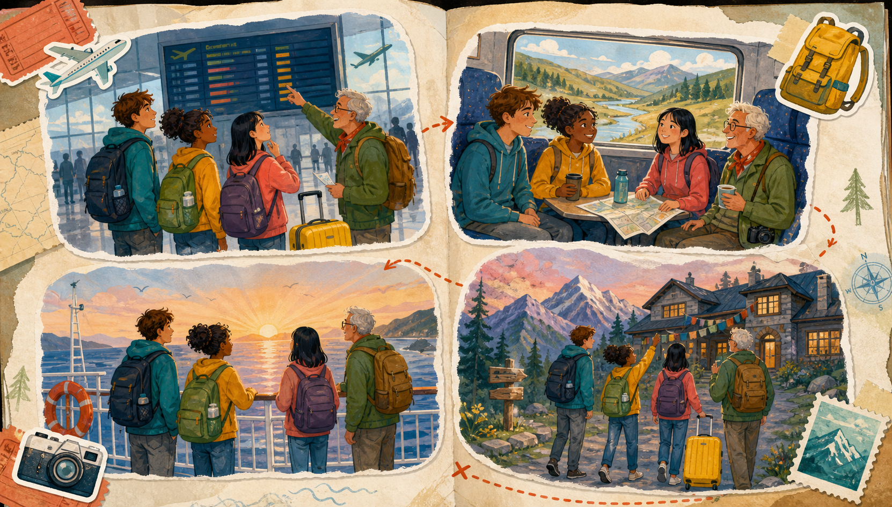
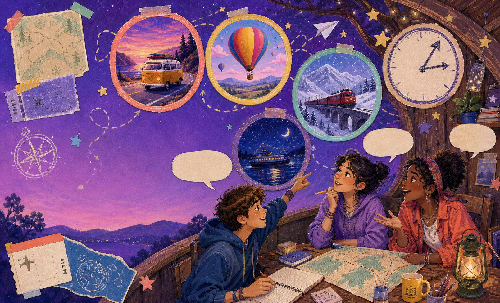

Open a postcard from tomorrow. Learn to describe an action that will be in progress at a future time.
Pack your imagination →
TRAVEL THROUGH TIME 10:10
Check-in · stamp your mood
Where is your mind travelling?
02 NOW
Choose a postcard feeling. Then complete: “Today, I feel like I’m travelling towards ___ because ___.”
Choose a stamp. Fictional answers are always welcome.
Warm-up · picture prediction
What will be happening inside?
03 LOOK
Tap a window. Make a wild but possible prediction.
Use an action phrase: sleeping, waiting, travelling, watching, taking photos…
Route map · today’s four stops
Your ticket includes four destinations.
04 AIMS
1Travel words
2Future snapshot
3Read a plan
4Tell a plan
By the end, students can…
name travel actions and time markers; build positive, negative, and question forms; understand the difference between a simple future plan and an action in progress.
Final postcard
describe a fictional or real travel day using at least three will be + -ing sentences and ask a partner one follow-up question.
No passport? No problem. We travel in our imagination.
Vocabulary introduction · action station
Pack eight useful actions.
05 WORDS
Tap a suitcase tag to reveal the action and say it with a partner.
Vocabulary practice · sort the luggage
Which bag belongs on the journey?
06 SORT
🧳Choose the tags that describe an action in progress.
Think: what can you see happening?
Select the two action tags. Score: 0 / 2
Grammar discovery · freeze the future
Point the camera at tomorrow.
07 NOTICE
8 PM
Mina will be travelling across the sea.
What does the sentence show?
It does not simply announce a future event. It opens a little window and shows the action in progress at a future moment.
will be + verb-ing
Tap a time stamp. What will be happening then?
Meaning · one future moment
A postcard from 8 tomorrow.
08 MEANING
NOW
We are planning a trip.
the speaker is here
8 TOMORROW
We will be waiting at the gate.
the action is in progress
Which card matches the “camera already there” idea?
Form · stamp the sentence
Put the words in the right carriage.
09 BUILD
Tap the pieces in order. Build: They will be exploring the city at 10.
Your sentence will appear here.
Subject
They
Future helper
will be
Action
exploring
Form · statement, negative, question
Open three travel doors.
10 FORMS
Subject + will be + verb-ing
We will be sailing at noon.
Subject + will not be + verb-ing
We will not be sailing at noon.
won’t be sailing is also possible.
Will + subject + be + verb-ing?
Will you be travelling next summer?
Tap a door to see its sentence pattern.
Grammar signals · time stamps
Stamp the moment, not just the day.
11 WHEN?
Which phrases give the listener a future camera position?
Stamp the three clearest future snapshots. Stamps: 0 / 3
Pronunciation · keep the rhythm moving
Say the sentence like a moving train.
12 SOUND
In natural speech, will be can move quickly. Tap each carriage, then say the whole sentence without stopping.
Carriages tapped: 0 / 4. Keep the stress on the action.
WILL-be CHECK-ing IN
Controlled practice · choose the right ticket
What will be happening at 9?
13 CHECK
At 9 tomorrow, we ___ for the train.
This time next week, I ___ in a cabin.
At midnight, they ___ across the border.
At noon, she ___ photos from the ferry.
Correct tickets: 0 / 4
Controlled practice · repair the language
One suitcase is packed wrong.
14 REPAIR
Tap the sentence that needs a repair. Then say the corrected version aloud.
Find the missing carriage: will + ___ + verb-ing.
Reading · pre-reading prediction
A group is travelling north.
15 GUESS
Pick two predictions. Then scan the postcard on the next stop.
Reading · a postcard from next week
The Northbound crew
16 READ
Hi from the future!
This time next week, four friends will be travelling north by train. At 7 on Monday morning, they will be waiting on Platform 3 with four hot chocolates. Nina will be carrying the map, while Jo will be checking the tickets for everyone.
At lunchtime, they will be eating sandwiches beside a frozen lake. In the afternoon, they will be walking through a pine forest. They have a problem: the hostel is far from the station. “At 9 tonight, we will not be sleeping yet,” says Jo. “We will be looking for the blue bus!”
Tap the yellow phrases. What picture appears in your mind?

A postcard can show a whole day in progress.
Highlighted phrases: 0 / 8
Reading · detail and inference
Find the details in the luggage tags.
17 DETAIL
1. Where will the friends be waiting at 7?
2. What will Nina be carrying?
3. Why will they not be sleeping at 9?
Answers correct: 0 / 3
Reading · notice the writer’s choice
Why did the postcard choose will be?
18 NOTICE
Choose the explanation that matches the camera metaphor.
Speaking practice · pair postcards
Interview a traveller from tomorrow.
19 PAIR
Choose a role and ask three questions. Use the time cards to keep the conversation moving.
ROLE A
The Night Train DJ
You are travelling all night. At midnight, you will be…? At 6, you will be…?
ROLE B
The Island Cartographer
You are exploring a new island. This time tomorrow, you will be…?
ROLE C
The Surprise Tourist
You do not know the destination. What will you be doing when you find it?
Choose a role and two question stamps.
Information gap · two postcards
Same time. Different window.
20 GAP
Student A has one postcard; Student B has another. Ask questions to discover what each traveller will be doing at 6 PM Friday.
Postcard A · The coast
At 6 PM Friday, Leo will be secret action. He will be with two friends. They will be near the water.
Leo will be setting up camp near the water.
Postcard B · The city
At 6 PM Friday, Sara will be secret action. She will be with her cousin. They will be near a market.
Sara will be exploring a night market.
Ask: “What will Leo/Sara be doing?” Then compare the two scenes.
Speaking · picture talk
Look through the future window.
21 TALK

Choose a window. Make the scene move with your words.
Use: At ___, I will be ___ing because ___.
Production task · travel creator
Design one day that is already moving.
22 CREATE
Build a fictional travel day with four snapshots. You need at least three Future Continuous sentences.
Tap three or four time cards to collect your route.
03:00
Review game · fast stamps
Can you catch the moving action?
23 REVIEW
Score: 0 / 5
At 10 tomorrow, the group ___ through the old town.
Pick the sentence that opens a future snapshot.
Homework · optional challenge
Send a postcard from next year.
24 HOME
Required
Write a 90–120 word postcard called “This time next year…” Include four time stamps and at least five travel or daily-life actions.
Underline every will be + -ing verb.
Optional creative challenge
Draw a four-panel comic or record a 45-second voice postcard. Add one negative sentence and one question for the reader.
A fictional destination is perfect.
Checklist: time stamp · will be · verb-ing · clear action · one interesting detail.
Wrap-up · exit ticket
What will you be taking with you?
25 EXIT
Choose one answer for each ticket. Then complete the final sentence aloud.
Collect one learn, one need, and one sentence ticket. 0 / 3
Boarding complete. Your imagination has no luggage limit ✦